Catégorie
Peinture
Huile et acrylique, sur toile et sur bois.
Matériel
Année
Tri
18 œuvres
Aucune œuvre ne correspond à ces critères.

Arouf et R9
22 octobre 2026 · Huile sur toile (lin 30x30)

Les débuts
9 octobre 2026 · Huile sur toile (lin 24x19)

Edouard président
21 septembre 2026 · Huile sur toile (lin 46x31)
Portrait d'Edouard
11 septembre 2026 · Huile sur bois (19x16,5)
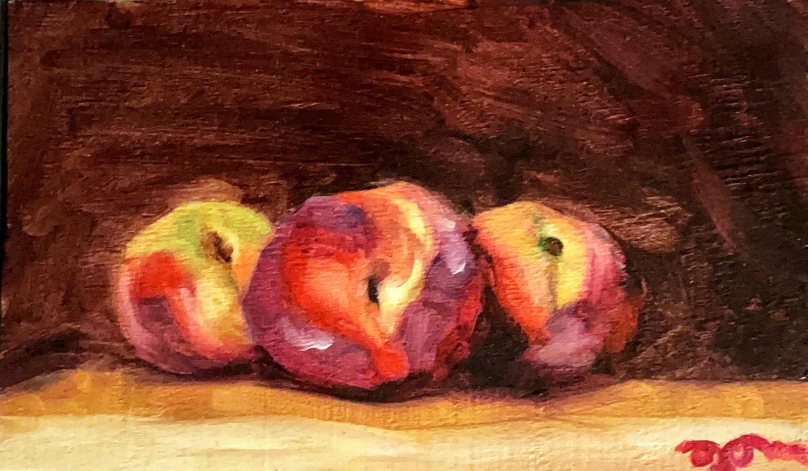
Pêches blanches
4 septembre 2026 · Huile sur bois (9,7x16,3)
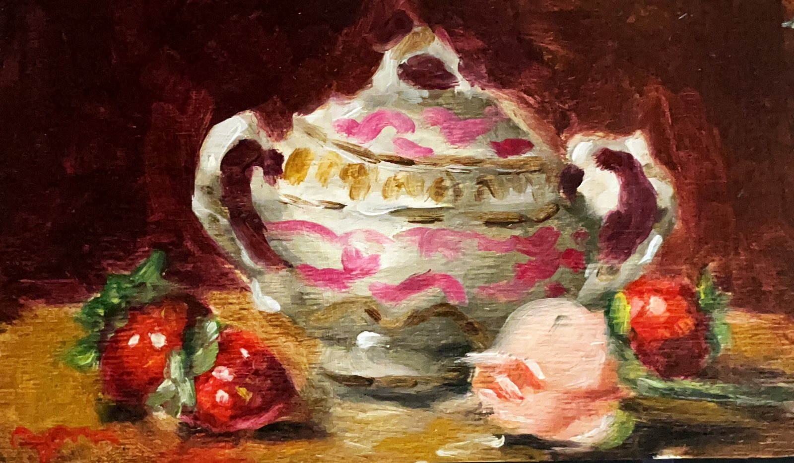
Des fraises et une rose
septembre 2026 · Huile sur bois (9,7x16,3)
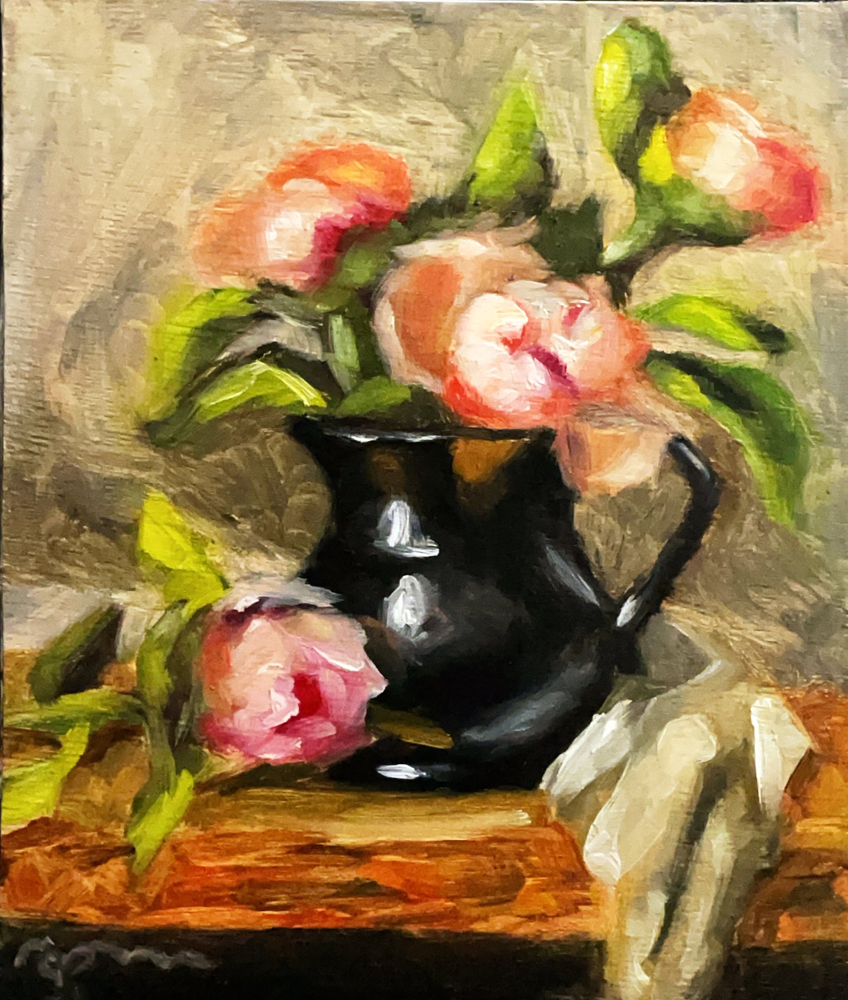
Pivoines roses
septembre 2026 · Huile sur bois (19x16,5)
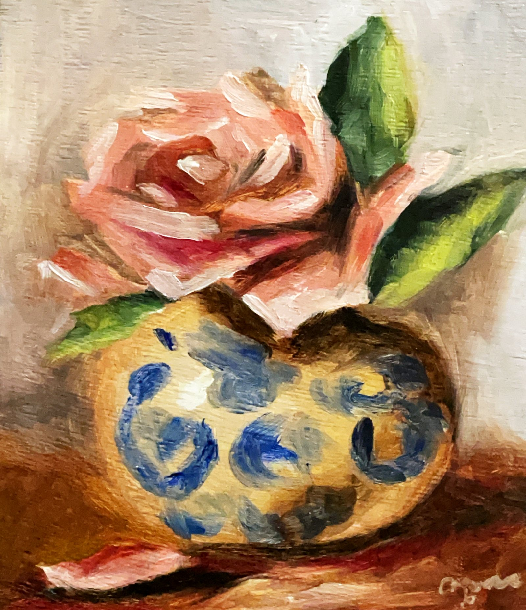
Rose dans un vase rond
septembre 2026 · Huile sur bois (19x16,5)
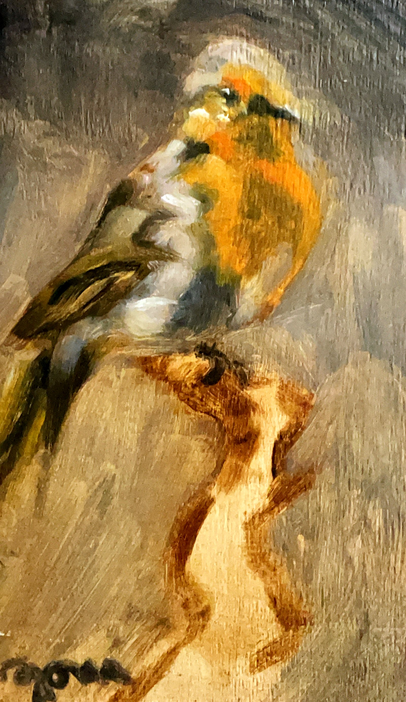
Rouge gorge
septembre 2026 · Huile sur bois (16,3x9,7)
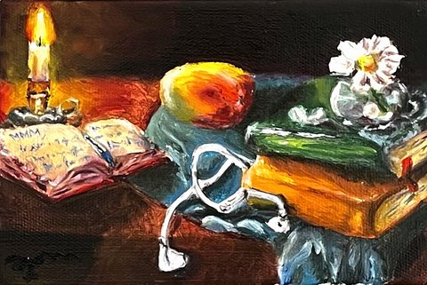
Nature morte
9 août 2026 · Huile sur toile (lin 14x18)
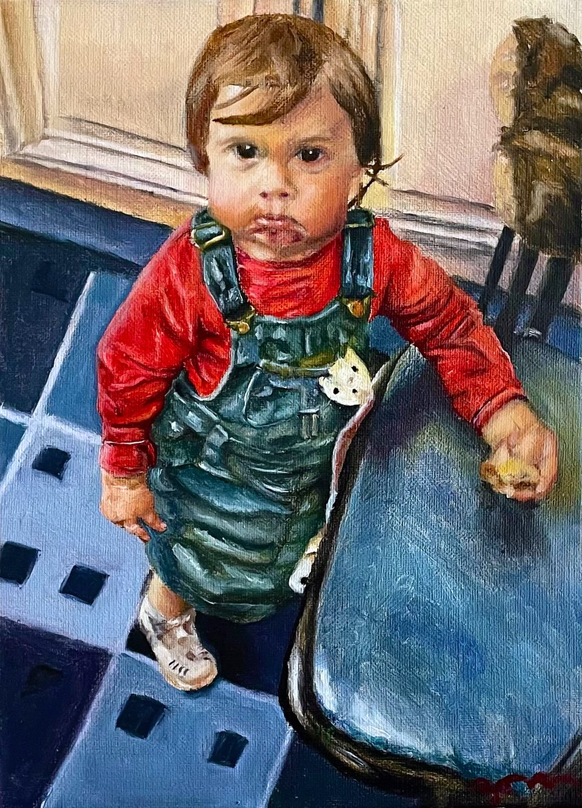
Margot à 2ans
23 juillet 2026 · Huile sur toile (lin 33x24)
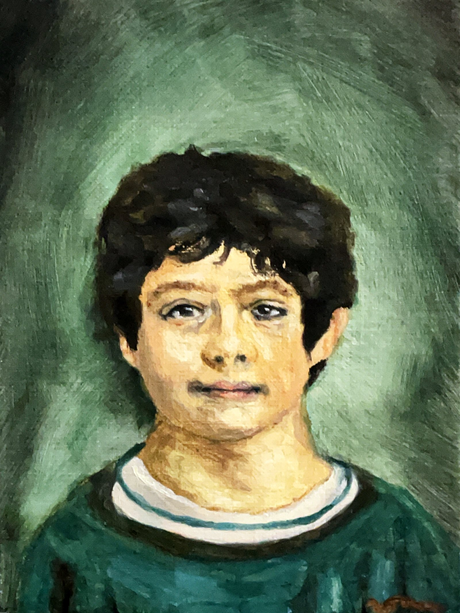
Portrait de papa petit
8 juillet 2026 · Huile sur toile (lin 22x16)
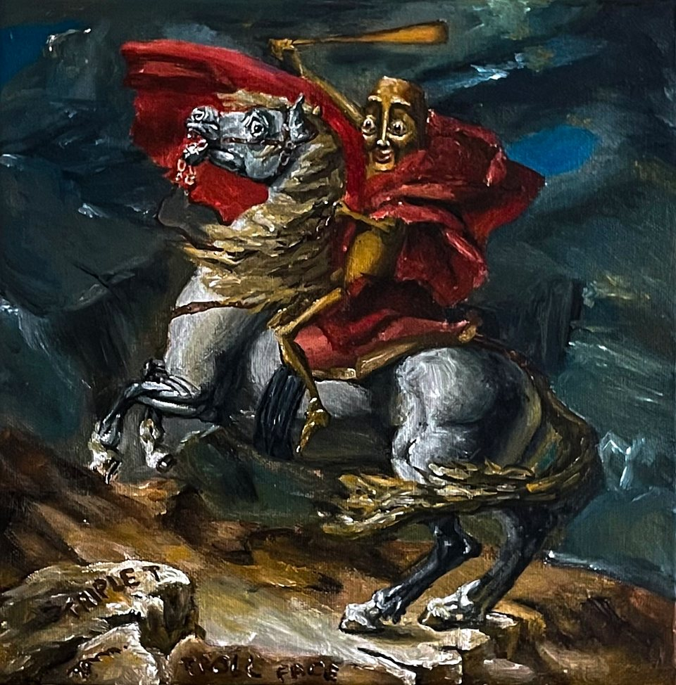
Triple T franchissant le Grand Saint Bernard
12 juin 2026 · Acrylique sur toile (coton 29x29)

Le Mouton et sa Marguerite
9 juin 2026 · Acrylique sur toile (lin 27x35)
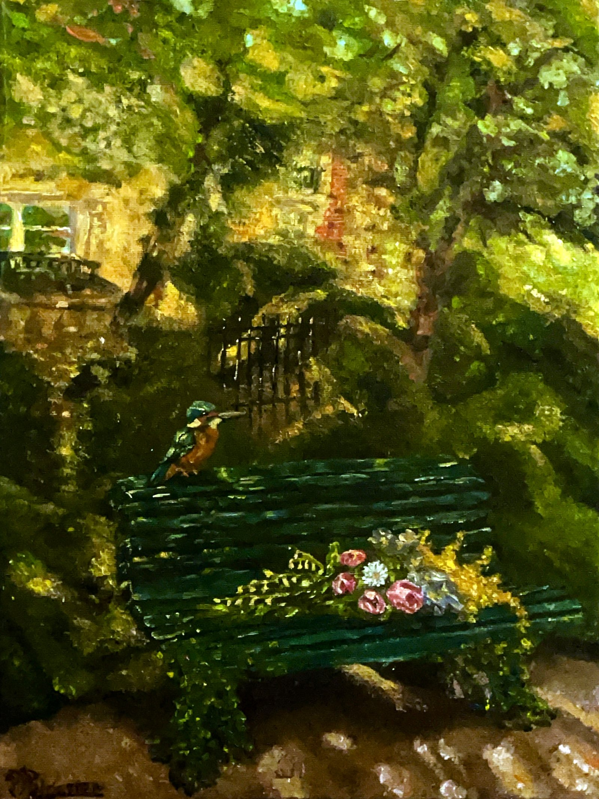
Le banc
23 mai 2026 · Acrylique sur toile (coton 40x30)

Le bouquet
2 mai 2026 · Acrylique sur toile (coton 35x28)
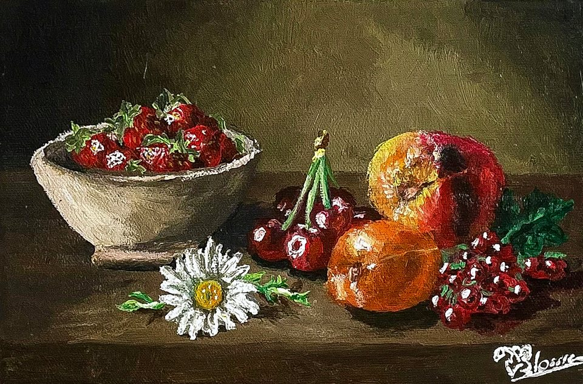
La Marguerite
21 mars 2026 · Acrylique sur toile (coton 17x22)
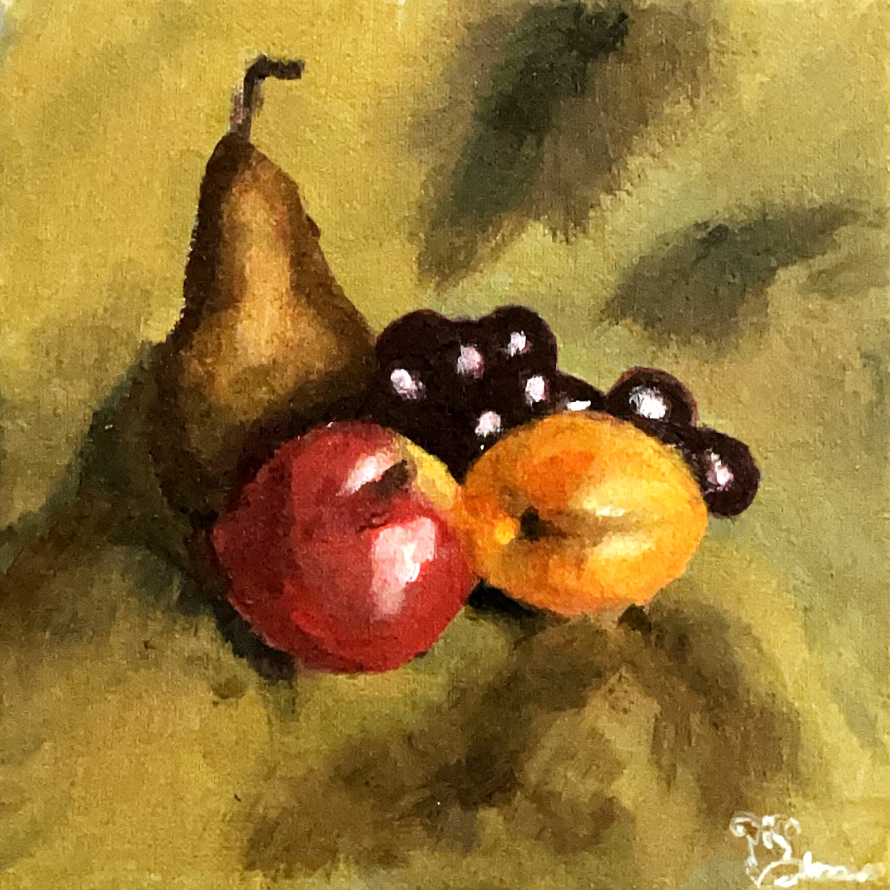
Nature morte
15 mars 2026 · Acrylique sur toile (coton 20x20)